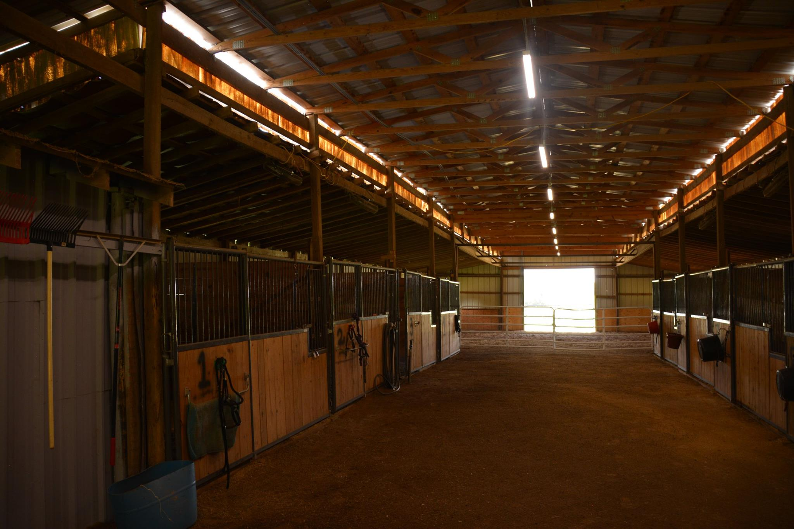
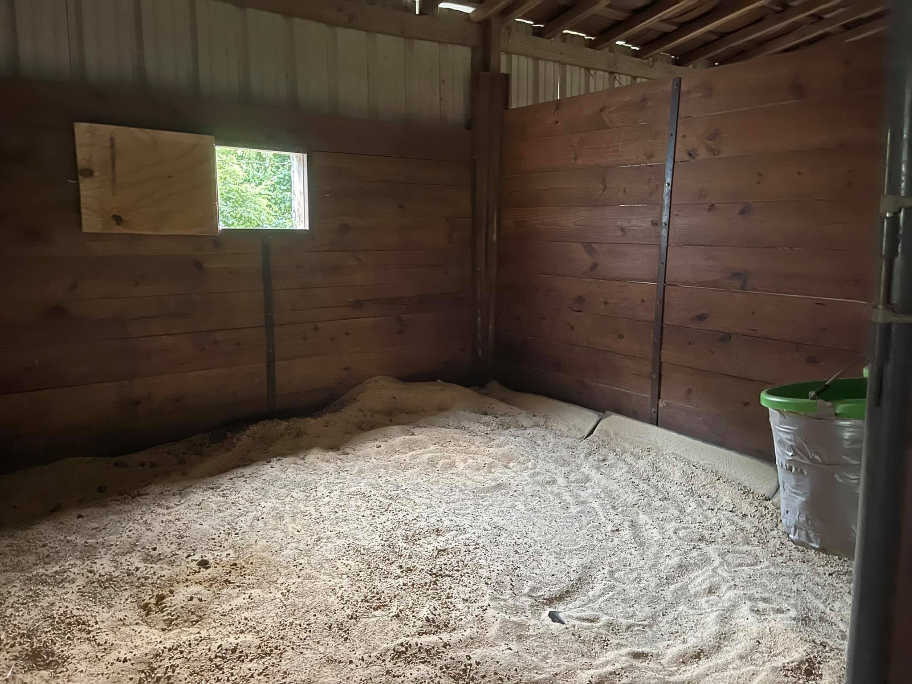
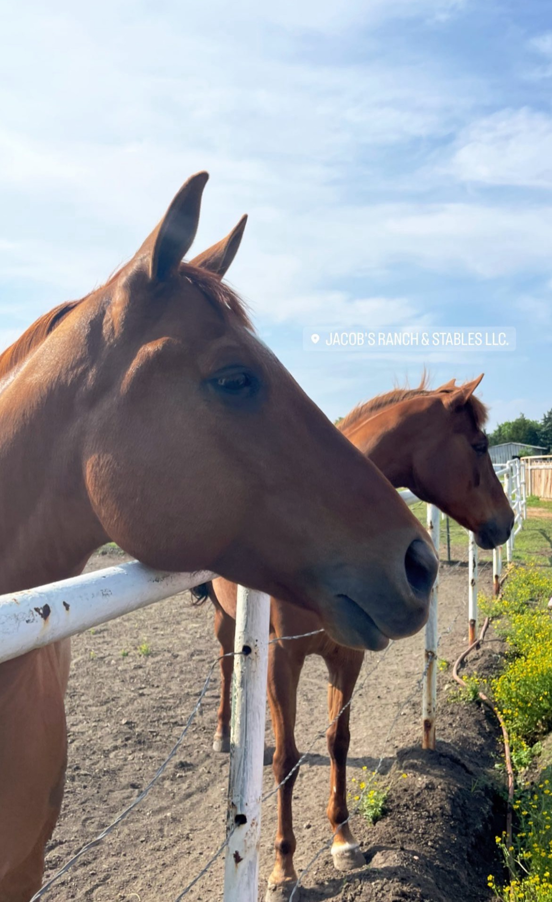

A Home for Your Horse.
A family-owned, 8.2-acre self-care boarding facility in Allen, Texas, empowering hands-on horse owners with the support of a professionally equipped stable.
Where Horses and Owners Both Feel at Home.
“Our self-care service is designed to empower horse owners with the flexibility to be hands-on in their horse's care while enjoying the support of a well-equipped and professionally managed facility. At Jacob's Ranch and Stables, we strive to create an environment where both horses and owners feel at home.”
Jacob's Ranch & Stables

Trusted by horse owners across North Texas
Everything You Need, Nothing You Don't.
From spacious turnout to clean stalls and quality riding space, our ranch is built to support both you and your horse without getting in the way of the relationship you share.
- 18 Large 12×12 Stalls
- Indoor & Outdoor Arenas
- 4 Spacious Pastures
- Round Pen & Wash Rack
- Tack Room & Personal Lockers
- Gated, Secure Facility

Hands-On Care, Professionally Supported.
Self-care boarding is for owners who treasure being part of everyday life with their horse: feeding, grooming, training, and bonding. We provide the space, the structure, and the peace of mind. You bring the love.
Explore What's Included